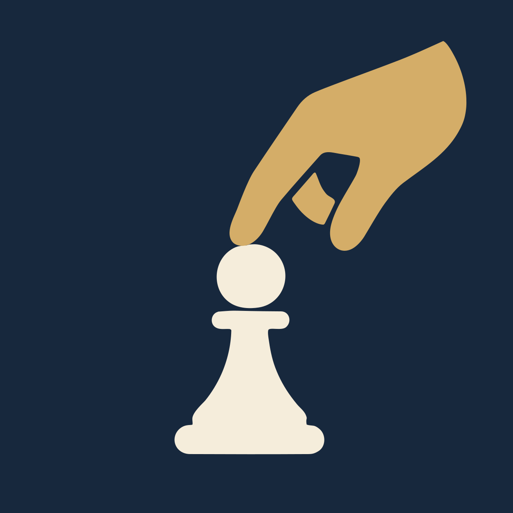

Szachy online na prawdziwej szachownicy — dla Twojego klubu
Uczniowie grają w domu na drewnianej szachownicy z kolegami z klubu. Telefon tylko podaje ruch rywala na głos i przyjmuje ich ruch — bez szachownicy na ekranie, bez reklam i bez kont na portalach szachowych.
Działa w przeglądarce na telefonie, tablecie i komputerze. Nic nie trzeba instalować.
Dlaczego kluby z tego korzystają
Prawdziwa szachownica
Dzieci ćwiczą jak na turnieju: bierki w ręku, pozycja na stole, nie na ekranie.
Mniej ekranu
Spokojna aplikacja bez animacji, reklam i powiadomień-przynęt. Rodzice to doceniają.
Zamknięty klub
Dołącza się kodem klubu (np. HETMA-7Q4MX), opcjonalnie też hasłem — a trener albo admin zatwierdza każdego nowego członka. Można też dodać ucznia po nicku, zmienić kod i usuwać członków.
Panel trenera
Trener widzi wyniki każdego ucznia, ogląda partie na żywo i pobiera zapis do analizy (PGN, Lichess).
Notacja turniejowa
Ruch wpisuje się zapisem jak na formularzu (Nf3, exd5, O-O) — przy okazji nauka notacji.
Tempa od 10 minut
Czas na zagranie ruchu i wpisanie go. Cofnięcie pomyłki za zgodą rywala.
Jak zacząć
- Trener zakłada klub — nazwa klubu i własny nick. Zajmuje minutę.
- Wysyła kod albo link uczniom (np. na grupie rodziców) albo dodaje ich po nicku. Uczeń zakłada konto i prosi o dołączenie, trener przyjmuje; klub zapisuje się w „Moich klubach”.
- Uczniowie wyzywają się w klubie albo szukają rywala w poczekalni klubu. Partie rankingowe (dla graczy z kontem) liczą się do wspólnego rankingu.
- Trener zagląda do panelu: kto gra, z jakim wynikiem, które partie warto omówić na zajęciach.
Pytania
Ile to kosztuje?
W okresie testów — nic. Jeśli aplikacja się przyjmie, kluby dostaną z wyprzedzeniem jasną informację o ewentualnym płatnym planie. Gra przez Lichess zawsze zostanie darmowa.
Czy dzieci potrzebują konta albo e-maila?
Potrzebne jest konto, ale bez e-maila: tylko nick i hasło (pół minuty). Dzięki temu trener wie, kto prosi o dołączenie, usunięcie z klubu jest skuteczne, a partie liczą się do rankingu. Konto działa na każdym urządzeniu.
Jakie dane zbieracie?
Tylko nick, przynależność do klubu, partie i ranking. Bez adresów, zdjęć, reklam i śledzenia. Dane są w Unii Europejskiej. Polityka prywatności.
Skąd wiadomo, że uczeń gra przy szachownicy, a nie z programem?
Nie da się tego sprawdzić — dlatego kluby są zamknięte i przeznaczone dla grup, które się znają. Trener widzi partie i może je omówić.
Na jakich urządzeniach działa?
Na każdym telefonie, tablecie i komputerze z aktualną przeglądarką. Aplikację można dodać do ekranu głównego jak zwykłą aplikację. Działa też z klawiaturą Bluetooth.
Czy można grać przez Lichess?
Tak — kto ma konto Lichess, może grać tam przez tę samą aplikację, na prawdziwej szachownicy, z rankingiem Lichess.
Chcesz przetestować aplikację z grupą w swoim klubie? Odpowiedz na wiadomość, w której dostałeś ten link — pomożemy założyć klub i zebrać uwagi.